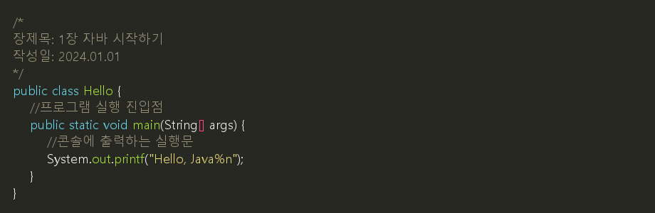
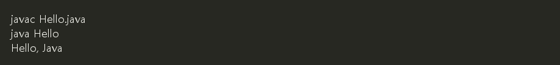
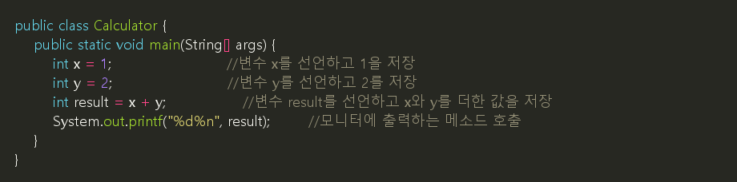
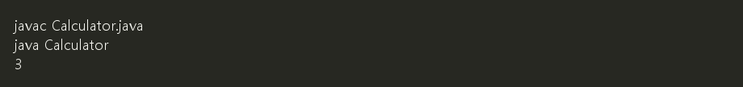

1. VSCode + Java
1.1 Java를 쉽게 쓰기 위한 확장팩
VS Code에서 Java를 편하게 사용하려면 먼저 Extension Pack for Java를 설치합니다. 이 확장팩 하나를 설치하면 Java 코드 작성, 실행, 디버깅에 필요한 기본 기능을 함께 사용할 수 있습니다.
| 확장팩 | 설명 |
|---|---|
Extension Pack for Java |
Java 개발에 필요한 대표 확장 모음입니다. |
Language Support for Java(TM) by Red Hat |
자동 완성, 문법 검사, 코드 이동 기능을 제공합니다. |
Debugger for Java |
Java 프로그램을 한 줄씩 실행하며 확인할 수 있습니다. |
Test Runner for Java |
JUnit 같은 테스트 코드를 실행할 수 있습니다. |
Maven for Java, Gradle for Java |
Maven, Gradle 프로젝트를 다룰 때 사용합니다. |
Project Manager for Java |
Java 프로젝트, 패키지, 클래스 구조를 쉽게 볼 수 있습니다. |
설치 방법:
- VS Code 왼쪽의 확장(Extensions) 아이콘을 클릭합니다.
- 검색창에
Extension Pack for Java를 입력합니다. - 게시자가 Microsoft인 확장팩을 선택합니다.
- Install 버튼을 눌러 설치합니다.
💡 참고: 처음 Java를 배우는 단계에서는 Extension Pack for Java 하나만 설치해도 충분합니다. Spring, 서버, 데이터베이스 관련 확장팩은 나중에 필요한 시점에 추가합니다.
1.2 Java 실습에서 자주 쓰는 VS Code 단축키
| 단축키 | 기능 | 사용 상황 |
|---|---|---|
Ctrl + Shift + X |
확장 화면 열기 | Java 확장팩을 설치할 때 사용합니다. |
Ctrl + Shift + P |
명령 팔레트 열기 | Java 관련 명령을 검색해서 실행할 때 사용합니다. |
` Ctrl + `` |
터미널 열기/닫기 | javac, java 명령을 직접 입력할 때 사용합니다. |
Ctrl + S |
파일 저장 | 실행 전에 .java 파일을 저장할 때 사용합니다. |
Ctrl + Space |
자동 완성 보기 | 클래스, 메소드, 변수 이름을 완성할 때 사용합니다. |
Ctrl + . |
빠른 수정 보기 | import 추가, 오류 수정 제안을 볼 때 사용합니다. |
Shift + Alt + F |
코드 정리 | 들여쓰기와 코드 모양을 자동으로 정리할 때 사용합니다. |
F2 |
이름 바꾸기 | 변수, 클래스 이름을 한 번에 바꿀 때 사용합니다. |
F5 |
디버깅 시작 | 중단점을 걸고 한 줄씩 확인할 때 사용합니다. |
Ctrl + F5 |
디버깅 없이 실행 | 간단히 실행 결과만 확인할 때 사용합니다. |
✅ Java 파일을 실행하기 전에 먼저 Ctrl + S로 저장하는 습관을 들입니다. 저장하지 않은 코드는 이전 내용으로 실행될 수 있습니다.
1.3 VSCode 폴더 위치에서 터미널 열기
VS Code 탐색기(Explorer) 에서 폴더 위치 기준으로 터미널 여는 방법은 이겁니다.
- 왼쪽 탐색기에서 원하는 폴더를 찾습니다.
- 예:
src > ch01 > sec08 sec08폴더 위에서 마우스 오른쪽 클릭- 통합 터미널에서 열기 또는 Open in Integrated Terminal 선택
그러면 VS Code 아래쪽 터미널이 열리고, 현재 위치가 바로 그 폴더가 됩니다.

실행방법
| 실행 결과 | 설명 |
|---|---|
|
 |
[Hello 실행]
정상 실행되면 콘솔에 교안 예제에서는 출력할 때 |

실행방법
| 실행 결과 | 설명 |
|---|---|
|
 |
[Calculator 실행]
정상 실행되면 |
1.4 inlay off

- teaching/materials/tools/vscode_java/vscode_java01.md최종 수정일: 2026-09-17 01:54